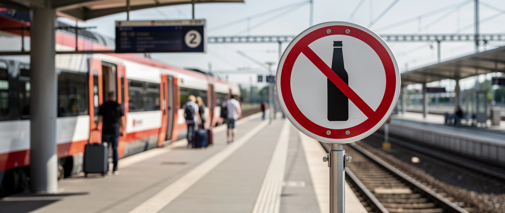

Verboten wird der Durst

Wer künftig am Bahnhof ein Bier trinkt, macht sich strafbar. Wer einen Bahnmitarbeiter in Lebensgefahr bringt, kommt womöglich am selben Tag wieder frei.
Die Deutsche Bahn verbietet Alkohol an allen 5.400 Bahnhöfen, bis Oktober bundesweit. Bahnchefin Palla nennt den Grund: den Schutz der Kollegen und Reisenden. Der Anlass ist real. Von Januar bis Mai zählte die Polizei 662 Körperverletzungen und 661 Bedrohungen gegen Bahnpersonal. In Hamburg gingen nach einem solchen Verbot 2024 die Konflikte messbar zurück.
Nur belegt keine Statistik, wie viel davon der Alkohol treibt. Und der Fall, der die Debatte befeuerte, zeigt das andere Problem. In Offenburg brachte ein mehrfach vorbestrafter, mutmaßlich betrunkener Mann einen Sicherheitsmann in Lebensgefahr. Die Staatsanwaltschaft wollte Haft. Das Amtsgericht lehnte ab. Er ist wieder frei.
So verlagert sich die Härte. Der Staat sperrt das Bier für alle Nüchternen, während er den Gewalttäter laufen lässt. Verboten wird nicht die Gewalt. Verboten wird der Durst.
Andere Länder ahnden die Tat. Deutschland reglementiert den Nüchternen.
Mehr dazu: Auf freiem Fuß.